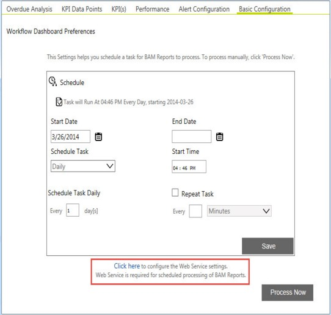
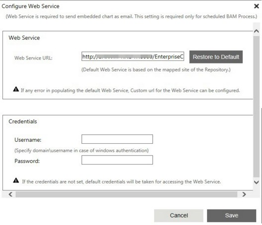
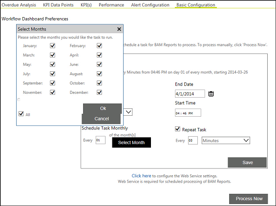
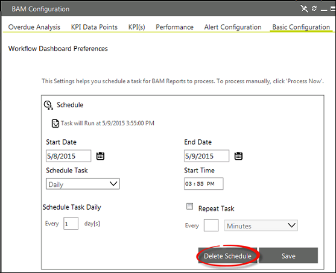

No
You use the Basic Configuration tab to define the schedules at which the analysis must be run. You can also run the BAM reports for the workflow immediately with the Process Now option available in this window.
You can process the BAM Reports in one of the following two ways:
In the manual process, click the Process Now button to synchronize the report data. You can achieve similar output by scheduling the process through the BAM Scheduler.
BAM Web Services Configuration
Configure the web services for scheduling the BAM Process using which you can send and email with the embedded graph. Use the BAM Configuration page for this configuration. DO the following to access the configuration page:
The BAM Configuration page appears.

The Configure Web Service section appears.
The Configuration Web Service section contains the default web service URL in the Web Service URL field. The default web service URL is based on the mapped repository.

You can change the default Web Service by entering the Web Service URL in the Web Service URL field. Enter a valid and accessible Web Service URL. Enter the username and password as the credentials for the Web Service. In case of Windows authentication, specify the user name with the domain name. For example domain\username.
Click Restore to Default to restore the default URL.
In case of any difficulty in populating the Web Service, create a Web Service with the ProcessBAMService.asmx specified in the following path:
..\AVEVA\Work Tasks\Web\BPMUITemplates\Default\BAM\WS\ProcessBAMService.asmx.
To schedule the analysis:

The schedule is deleted, and the respective database entries are removed.
The Delete Schedule button appears only after you save a schedule. If you do not see the Delete Schedule button even after saving the schedule, refresh the page, or close the page and open the page again.
